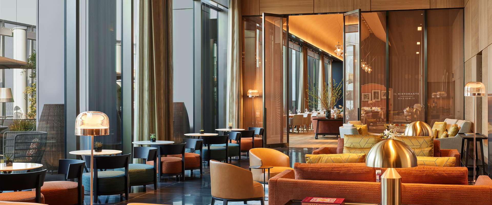
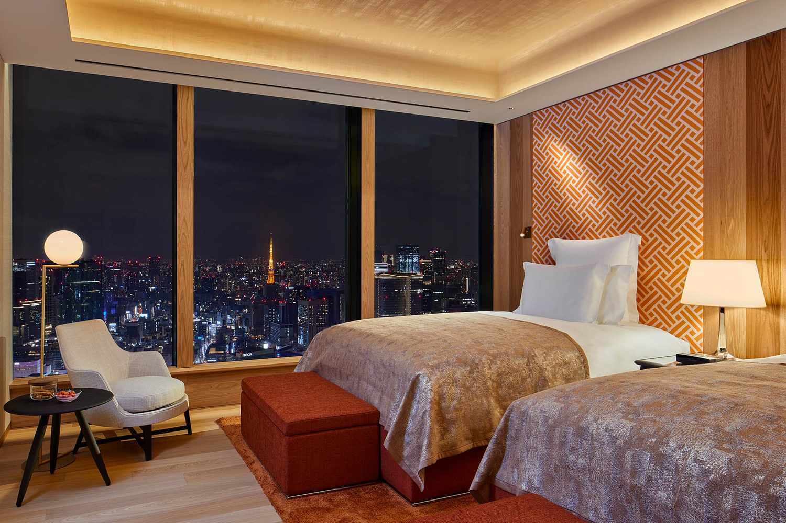

Tokyo Favorite
Bulgari Hotel Tokyo is the high-glam option when the client wants Tokyo to feel sharp, new, and dressed up.
Bulgari Hotel Tokyo is a different answer than Aman. Where Aman is quiet and monastic, Bulgari is polished, glamorous, and fashion-house refined. It sits high above Tokyo Midtown Yaesu with quick access to Ginza, Tokyo Station, luxury shopping, and some of the best dining in the city.
What makes it unique
Italian luxury, Japanese precision, and a very current Tokyo address.
This is the Tokyo hotel for clients who like things crisp, beautiful, and modern. The experience feels more dressed up than meditative, with Bulgari’s design language layered into a city that already understands restraint, service, and detail.
Best For
New Tokyo glamour
Great for couples, shopping trips, fashion-forward clients, and travelers who want a newer hotel with polish.
Known For
Restaurants and bar
Il Ristorante - Niko Romito, Sushi Hoseki, and the Bulgari Bar give the hotel real destination value.
Stay
98 rooms and suites
The scale feels intimate enough for service to matter, while still having the energy of a major global hotel.
Client Type
Style-driven luxury
Best for clients who want high design, skyline views, and a hotel that feels very current.


Rooms and suites
Rooms and suites are sleek, warm, and very Bulgari: polished woods, clean lines, city views, and a residential feeling that works well for couples or clients using Tokyo as part of a larger Japan itinerary. The suites are the right call when the client wants space to host, dress, relax, and return to after big dining nights.
Dining and nightlife
This is where Bulgari makes a lot of sense. Il Ristorante - Niko Romito brings the brand’s Italian culinary identity into Tokyo, Sushi Hoseki gives a more intimate Japanese counterpoint, and the Bulgari Bar is an easy place to begin or end the night. For clients who want Ginza, shopping, cocktails, and refined dining, it is a very clean fit.
My honest take
Bulgari Tokyo is not trying to be the calmest hotel in the city. It is trying to be one of the sharpest. I would use it for clients who want Tokyo to feel polished, stylish, and slightly more glamorous than traditional.